Research Poster
FEIT Graduate Research Showcase poster presenting the end-to-end robotic sorting system and key experimental findings.
View Poster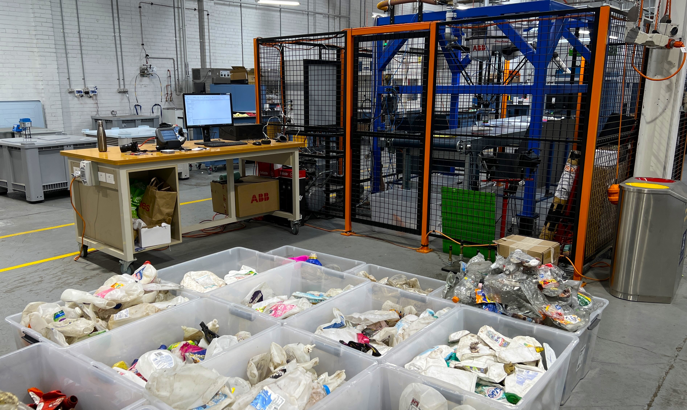
From AI detection to physical recovery of real post-consumer plastics using industrial machine vision, conveyor tracking and an ABB IRB 360 delta robot.
This research investigates whether accurate AI-based object detection can be translated into reliable physical recovery when integrated with an industrial robotic sorting system operating on a moving conveyor.
Rather than evaluating computer vision in isolation, the research examines the complete perception-to-action chain using real post-consumer plastic waste. Image acquisition, detection, object selection, conveyor tracking, robot motion and pneumatic grasping are evaluated as one coordinated system.
The platform integrates industrial machine vision, AI inference, conveyor tracking, pneumatic manipulation and an ABB IRB 360 delta robot into a complete robotic sorting cell.
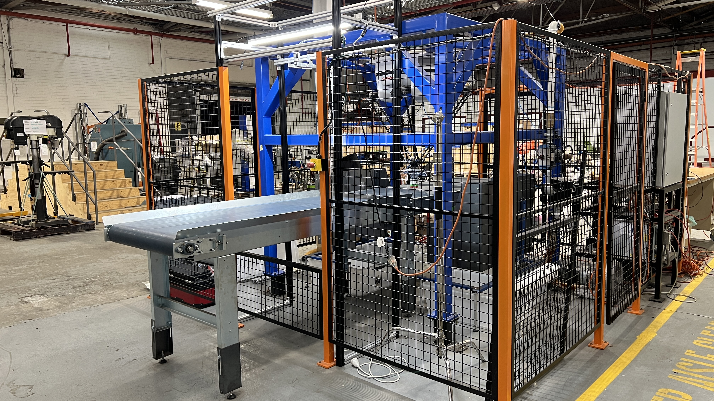
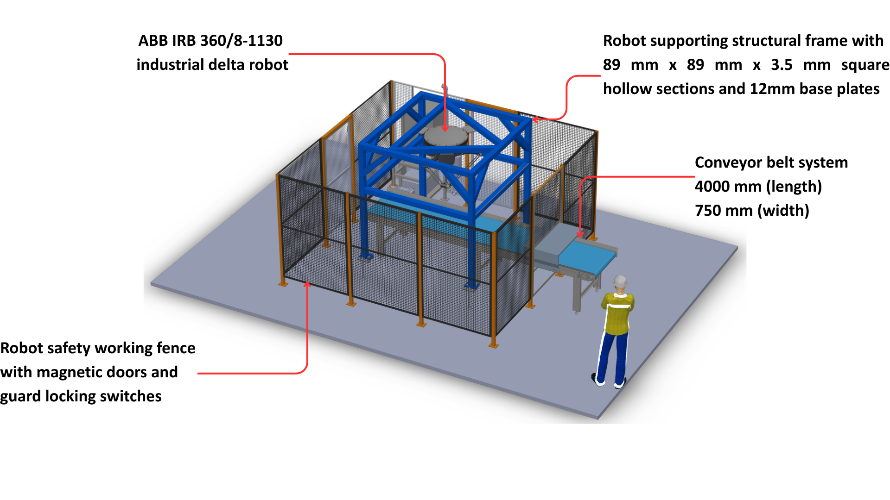
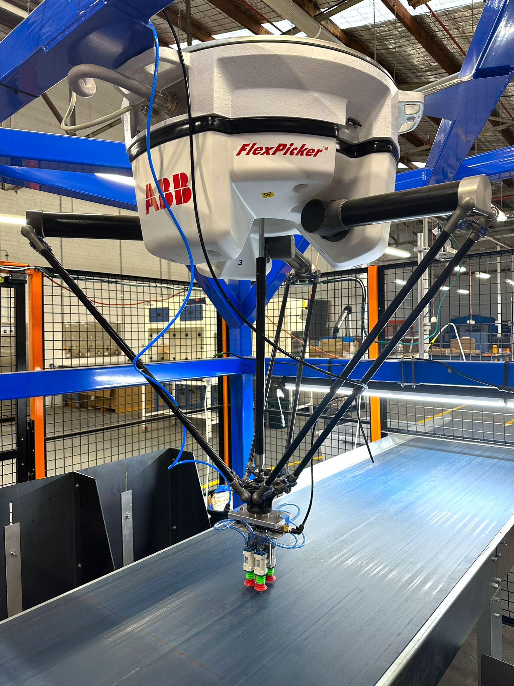
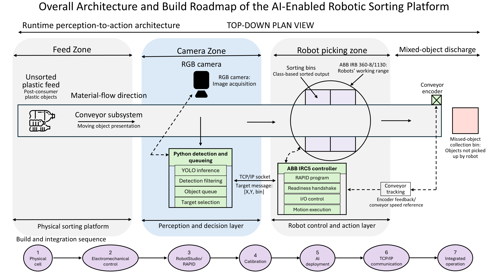
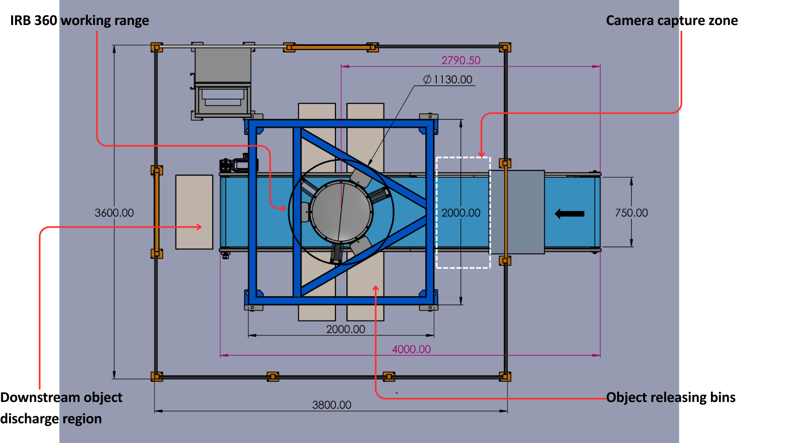
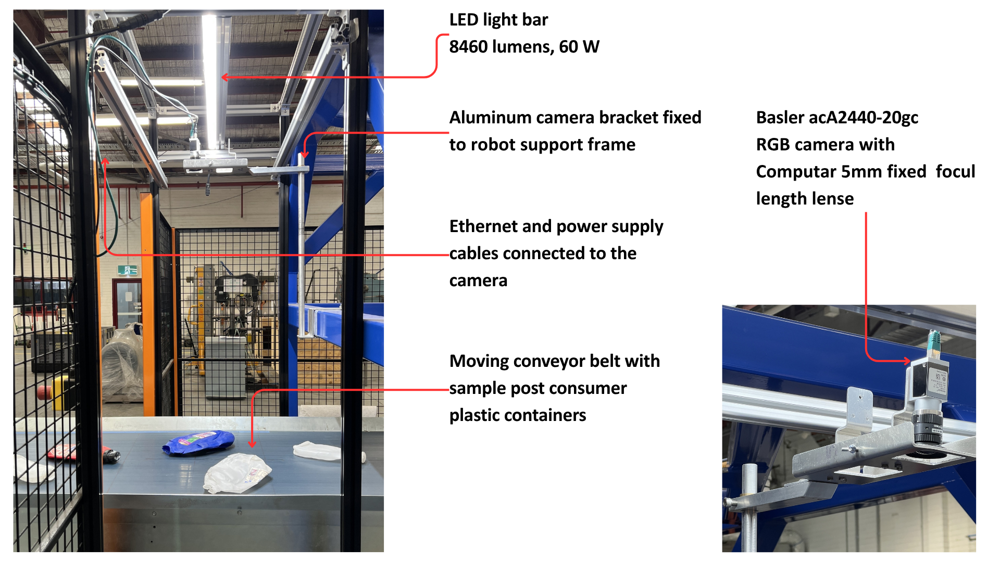
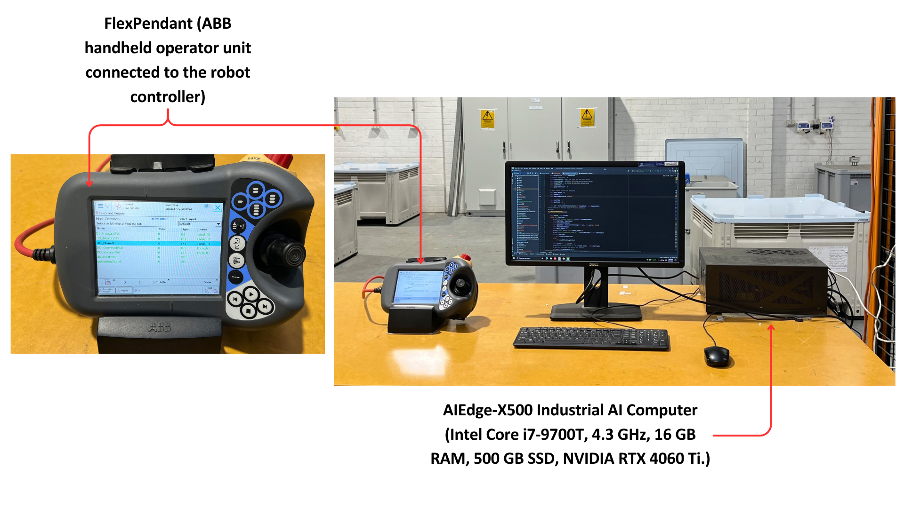
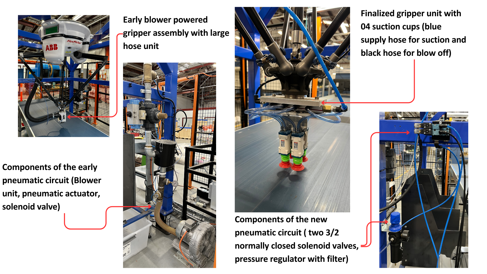
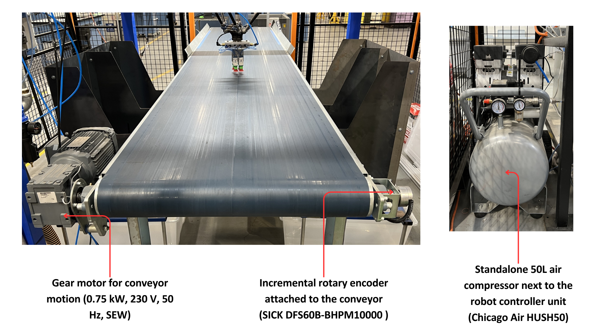
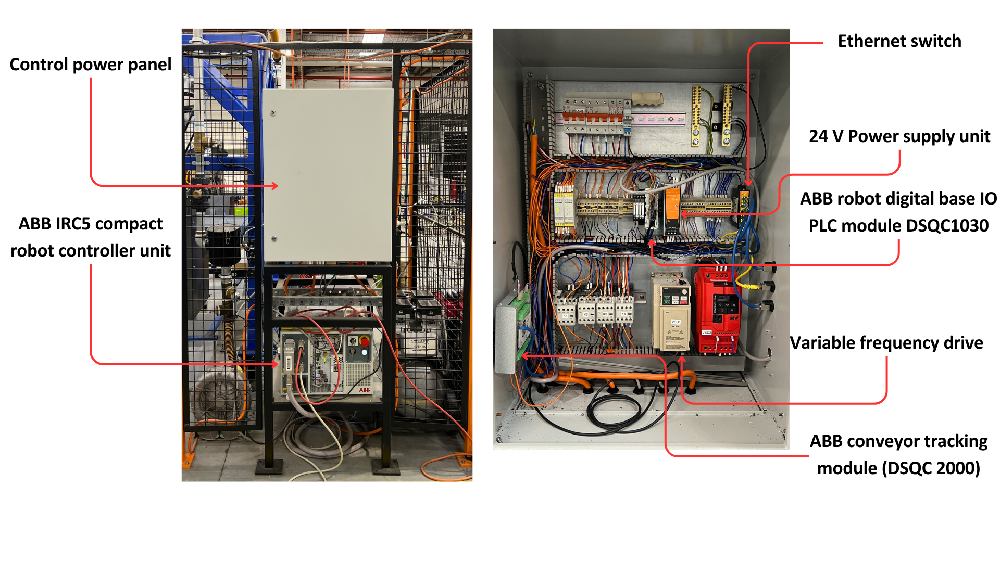
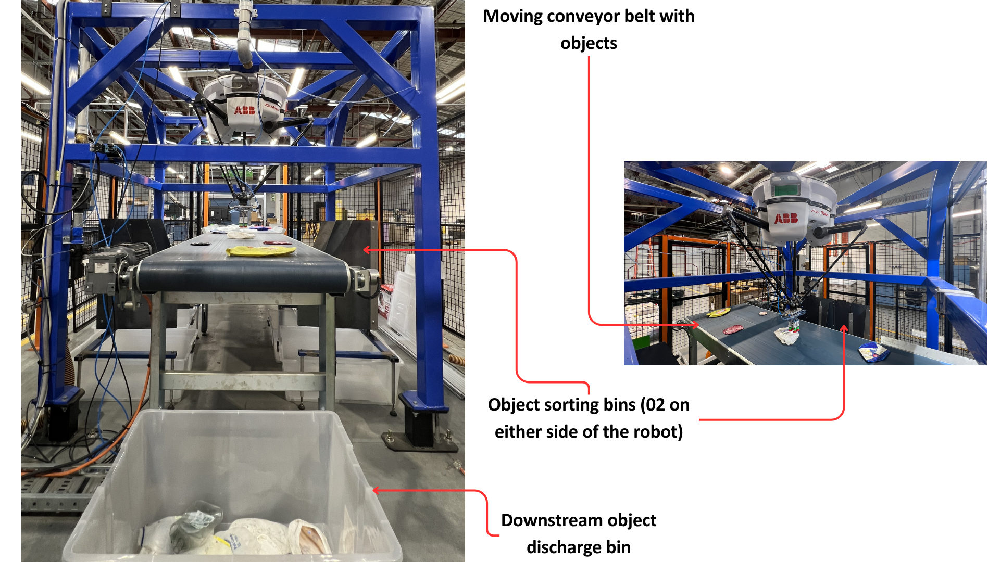
High perception performance was necessary, but physical recovery depended on the complete chain: target availability, scheduling, conveyor tracking, robotic interception and reliable suction grasping.
Demonstration of the complete perception-to-action robotic sorting system operating with real post-consumer plastic waste.
Explore the research poster, public dataset, demonstration material and other outputs associated with this project.
FEIT Graduate Research Showcase poster presenting the end-to-end robotic sorting system and key experimental findings.
View PosterPublic post-consumer plastic waste image dataset and associated annotation material used in this research.
Access DatasetAssociated peer-reviewed research publication or accepted manuscript.
Watch the robotic sorting system operating from AI-based perception through conveyor tracking and physical object recovery.
Watch VideoReliable robotic sorting depends on perception, target selection, conveyor tracking, timing, grasping and physical recovery performing effectively as one coordinated system.
For research enquiries, collaborations, publications and further information, please use the verified professional profiles provided here.
The research team contributing to the development and evaluation of this work includes:
This research project was supported through Australian Government funding and collaboration with industry partners in the Australian plastics recycling sector.